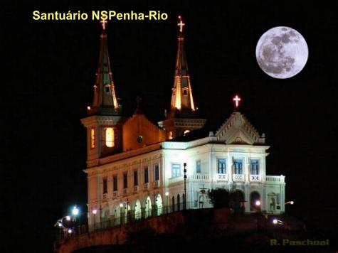
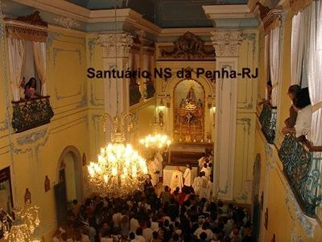
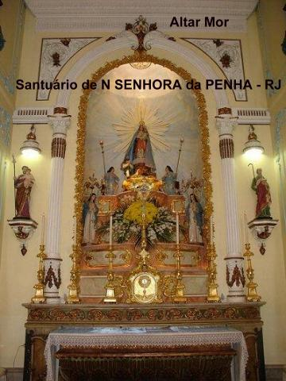
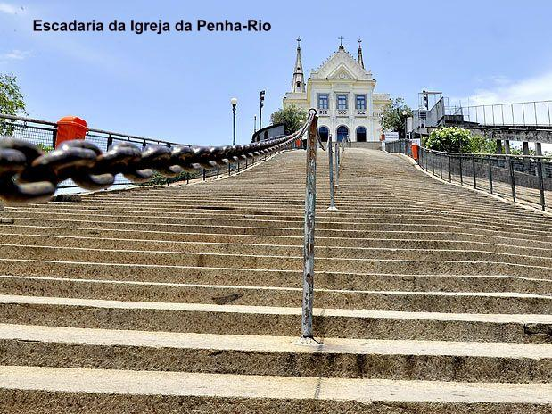
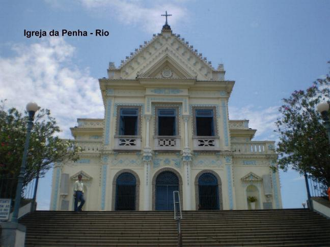

NO RIO DE JANEIRO
HISTÓRIA
A segunda Ermida em honra da VIRGEM DA PENHA no Brasil, foi edificada no Rio de Janeiro, após a fundação da Fazenda Grande ou Fazenda de NOSSA SENHORA DA AJUDA, na freguesia de Irajá. Tudo começou no inicio do século XVII, por volta de 1635, quando o Capitão Baltazar de Abreu Cardoso subindo o penhasco (a grande pedra) para ver as suas plantações, uma vez que era proprietário de toda a área ao redor do atual Santuário, foi atacado por uma venenosa serpente. Ele que era devoto da VIRGEM MARIA, quando se viu incapaz de se defender, pediu socorro a MÃE DE DEUS gritando: "Minha NOSSA SENHORA, valei-me!". Nesse preciso momento surgiu um lagarto que é inimigo das serpentes, e aconteceu uma luta mortífera entre os dois animais. Baltazar, não perdeu tempo e fugiu.
Depois de se recuperar do susto, pensando no ocorrido, reconheceu que o lagarto apareceu exatamente no momento em que ele pediu a proteção da VIRGEM MARIA. Agradecido por tão grande carinho maternal, construiu uma pequena Capela onde pôs uma imagem de NOSSA SENHORA. Se antes o Capitão subia o penhasco para ver as suas plantações, a partir daquele dia, com muito prazer, passou a subir também para agradecer na Capela, a primorosa providência da MÃE DO CÉU, que lhe salvou a vida. Assim como ele, também os seus parentes, amigos e vizinhos, que souberam do acontecido e que já amavam a VIRGEM MARIA, e até mesmo pessoas curiosas, que à distância viam a pequena Capela, passaram a subir a grande pedra, uns para rezar, outros para saudar e cumprimentar a MÃE DE DEUS, enquanto alguns vinham agradecer e outros para pedir graças e a intercessão poderosa da Santa do Penhasco (da Penha). De tanto as pessoas dizerem: vamos à Penha visitar NOSSA SENHORA, automaticamente com maior propriedade passaram a dizer: vamos visitar NOSSA SENHORA DA PENHA. E o costume criou raiz para sempre.
A devoção a MÃE DE DEUS sob o nome de NOSSA SENHORA DA PENHA se difundiu rapidamente e se tornou cada vez maior o número de pessoas que visitavam a modesta Capela para prestar uma homenagem a VIRGEM e também desfrutar de uma magnífica paisagem da cidade.
No final de sua vida, o capitão Baltazar doou a propriedade a VIRGEM DA PENHA, e por isso, houve necessidade de ser escolhido alguém para administrar responsavelmente o patrimônio. Então foi criada a Venerável Irmandade de NOSSA SENHORA DA PENHA no ano de 1728, a qual com muito zelo e dedicação demoliu a primeira Capela, que era muito pequena e não mais atendia as necessidades pelo fato da frequência ter aumentado consideravelmente. E logo em seguida, construíram outra Capela, bem maior e com mais espaço, além de uma torre onde colocaram dois pequenos sinos.
Mais tarde, no ano de 1870, esta segunda Capela foi demolida e foi construído em seu lugar um novo templo, agora uma igreja, com uma área bem maior, com bancos de madeira confortáveis, com genuflexório e encosto, tendo também uma bela torre com novos sinos. Por volta do ano de 1900 houve uma nova intervenção. O templo foi ampliado, ganhando duas novas torres, nas quais, mais tarde, foi instalado um carrilhão com 25 sinos de origem portuguesa, adquiridos na Exposição Nacional do 1º Centenário da Independência do Brasil. Este Carrilhão foi inaugurado no dia 27 de setembro de 1925 com a bênção do Núncio Apostólico no Brasil, Cardeal Dom Henrique Gasparri, que representava Sua Santidade o Papa Pio XI.
A ESCADARIA
No ano de 1817 subindo a pedra um piedoso casal para rezar na Igreja, a esposa, Senhora Maria Barbosa, comentou com o marido que ia pedir a NOSSA SENHORA DA PENHA para interceder por eles junto a DEUS, a fim do SENHOR lhes conceder a graça de um filho, considerando que estavam casados há alguns anos e não tinham nenhum.
A Senhora Maria Barbosa que tinha uma fé consistente, com muita esperança e confiança, suplicou ardentemente a intercessão da VIRGEM DA PENHA, prometendo que se o SENHOR lhe concedesse a graça de ter um filho mandaria esculpir no duro granito do penhasco uma escadaria para facilitar o acesso dos devotos ao Santuário. No ano seguinte o casal foi presenteado com um lindo menino e sem perda de tempo, no ano de 1819 a escadaria da gratidão estava pronta. São 382 degraus talhados na própria pedra, polidos e preparados, para um acesso seguro e confortável.
O SANTUÁRIO HOJE
Edificado à entrada da cidade, com o sorriso de NOSSA MÃE SANTÍSSIMA aos que chegam, quer pela Avenida Brasil ou Linha Vermelha, quer pela Ponte Rio - Niterói ou mesmo pelo Aeroporto Internacional Tom Jobim, o Santuário de NOSSA SENHORA DA PENHA é, por excelência o trono que MARIA, MÃE DE DEUS, escolheu no Rio de Janeiro para ser o centro de sua devoção entre nós. A este Santuário acorrem milhares de peregrinos vindos de todo o Brasil e do exterior, para lhe agradecer as preciosas graças alcançadas, ou pedir a sua poderosa intercessão junto ao SENHOR. À medida que subimos a colina sagrada, sentimos que o ambiente se torna mais místico, com as inúmeras e variadas demonstrações de fé e amor, de uma profunda confiança na VIRGEM e em nosso DEUS. São inúmeras as pessoas que sobem a escadaria rezando, algumas ajoelhadas, e, sobretudo, murmurando as orações do Terço.
No dia 15 de junho de 1935, por decreto de Sua Santidade o Papa Pio XI, a Igreja de NOSSA SENHORA DA PENHA foi agregada à Sacrossanta e Patriarcal Basílica de SANTA MARIA MAGGIORE em Roma.
No dia 15 de setembro de 1966, o Cardeal Dom Jaime de Barros Câmara, então Arcebispo do Rio de Janeiro, elevou o templo sagrado de NOSSA SENHORA DA PENHA à categoria de Santuário Perpétuo.
No dia 31 de maio de 1981, o Cardeal Dom Eugênio de Araújo Sales, atendendo aos desejos de Sua Santidade o Papa João Paulo II, elevou o SANTUÁRIO DE NOSSA SENHORA DA PENHA à categoria de Santuário Mariano Arquidiocesano.
A IMAGEM DE NOSSA SENHORA
A MÃE DE DEUS está vestindo um rosa longo com corpete branco, todo bordado; um lindo manto azul cobre a cabeça e desce debruado em ouro nos acabamentos até os pés; usa uma admirável coroa de ouro e pedras preciosas; segura o MENINO JESUS no seu braço esquerdo e com a mão direita, acaricia os pés de Seu FILHO. JESUS usa um camisolão de tecido verde claro, debruado em ouro nas mangas, gola e no acabamento inferior; tem também uma linda coroa de ouro e pedras preciosas; na mão esquerda ampara o globo terrestre encimado com uma cruz dourada, e na mão direita traz um cetro dourado, símbolo de poder, o SENHOR reina sobre o mundo.
MELHORANDO ESTRUTURALMENTE
Várias obras foram feitas para melhor receber os muitos devotos de NOSSA SENHORA DA PENHA. No pátio foram construídos novos banheiros, também uma Concha Acústica dotada de ótima estrutura para eventos culturais, com capacidade para 30 mil pessoas. O bondinho que transporta pessoas idosas e visitantes foi inaugurado em 2003, e tem capacidade para conduzir até 500 pessoas por hora.
Com o crescente aumento do número de devotos que visitam o Santuário tornam-se contínuas e necessárias as obras de melhoria da sua infra-estrutura. Pela vontade do SENHOR, as obras são sempre realizadas.




